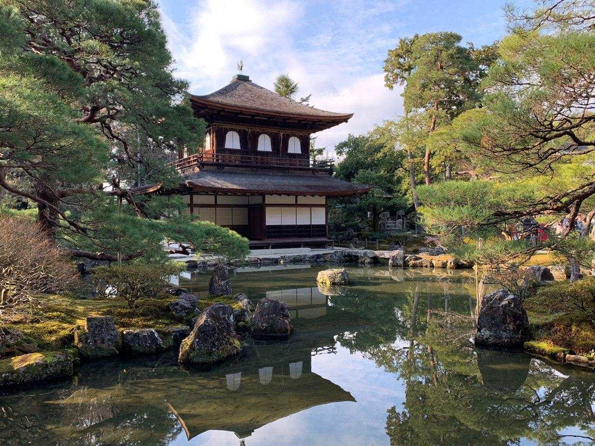

KCGI WEB101 Site
Home
About Me
Hobbies
Galleries
Biography
Kyoto Galleries
Kannon Island||Address:28 Sagatsuridonocho, Ukyo Ward, Kyoto, 616-8351
Fushimi momoyama Castle||Address:Momoyamacho Okura, Fushimi Ward, Kyoto, 612-8051

Ginkakuji Temple||Address:2 Ginkakujichō, Sakyō-ku,
Kyoto, 606-8402
Daimonji||Address:Shishigatani Daikokudanicho, Sakyo Ward, Kyoto, 606-8442
Kiyomizu Dera||Address:1-chōme-294 Kiyomizu, Higashiyama-ku, Kyoto, 605-0862
Kinkakuji||Address:Kinkakujichō, Kita-ku,
Kyoto, 603-8361
Arashiyama||Address:Arashiyama, Ukyo Ward, Kyoto, 616-0007
Ginkakuji||Address:Ginkakujichō, Sakyō-ku,
Kyoto, 606-8402